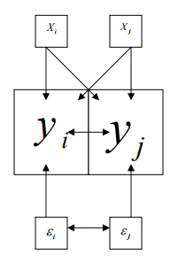

Simple feature collection with 6 features and 17 fields
Geometry type: POINT
Dimension: XY
Bounding box: xmin: 741383 ymin: 6945636 xmax: 742745 ymax: 6946217
Projected CRS: SIRGAS 2000 / UTM zone 22S
# A tibble: 6 × 18
PT PU AP DPXV DSBM DSIG DCTC DABM ND NB NS NG MO
<dbl> <dbl> <dbl> <dbl> <dbl> <dbl> <dbl> <dbl> <dbl> <dbl> <dbl> <dbl> <fct>
1 9.20e5 9485 97 1642 876 6763 7022 367 3 3 1 1 MO
2 7.00e5 9589 73 2033 1266 6916 7175 807 2 3 2 2 N
3 7.5 e5 6250 120 1122 1324 7211 7470 803 2 4 2 2 N
4 1.15e6 9426 122 1612 1064 6952 7211 136 3 3 1 1 SM
5 7.00e5 6364 110 1532 936 6824 7083 116 3 2 1 1 MO
6 6.30e5 7500 84 2376 1668 7543 7802 143 2 2 0 1 N
# ℹ 5 more variables: PSN <fct>, CH <fct>, PC <fct>, BRO <fct>,
# geometry <POINT [m]>Avaliação em Massa
Regressão Espacial
Luiz Droubi
Academia da Engenharia de Avaliações
29 de julho de 2025
Modelos Espaciais
Introdução
- Até agora trabalhamos com a hipótese que:
- \[\mathbf{y} = \pmb{X\beta} + \pmb{\epsilon};\; \pmb{\epsilon} \overset{\underset{\mathrm{i.i.d.}}{}}{\sim} \mathcal N(0, \sigma^2\mathbf I)\]
- Se os dados são distribuídos espacialmente, pode haver dependência espacial
- e.g.: \(\pmb{\epsilon} \neq \mathcal N(0, \sigma^2\mathbf I)\)
- ou: \(\mathbf{y} \neq \pmb{X\beta}\)
Modelos Espaciais
- Existem diversos tipos de modelos espaciais, de maior ou menor complexidade
- Um dos muitos famosos é o modelo espacial do erro (Spatial Error Model - SEM):
- \[\mathbf y = \pmb{X\beta} + \mathbf{u}; \; \mathbf u = \pmb{\lambda W u} + \pmb{\epsilon} \qquad(1)\]
- Outro muito conhecido é o modelo da defasagem espacial (Spatial AutoRegressive Model - SAR):
- \[\mathbf y = \pmb{\rho W y} + \pmb{X\beta} + \pmb{\epsilon} \qquad(2)\]
- Existem também outros, como o de defasagem nas características (Spatially Lagged X - SLX)
- \[\mathbf y = \pmb{W X \theta} + \pmb{X\beta} + \pmb{\epsilon} \qquad(3)\]
- Um dos muitos famosos é o modelo espacial do erro (Spatial Error Model - SEM):
Modelo Espacial mais geral
Todos os modelos podem ser derivados do Modelo de Manski:
- \[\mathbf y = \pmb{\rho W y} + \pmb{W X \theta} + \pmb{X\beta} + \mathbf u; \; \mathbf u = \pmb{\lambda W u + \epsilon} \qquad(4)\]
Se \(\theta = 0; \rho = 0 \rightarrow \mathbf{SEM}\)
Se \(\lambda = 0; \rho = 0 \rightarrow \mathbf{SLX}\)
Se \(\lambda = 0; \theta = 0 \rightarrow \mathbf{SAR}\)
O Modelo Espacial Durbin (Spatial Durbin Model - SDM) é obtido com \(\rho = 0\):
- \[\mathbf y = \pmb{W X \theta} + \pmb{X\beta} + \mathbf u; \; \mathbf u = \pmb{\lambda W u} + \pmb{\epsilon} \qquad(5)\]
Diferença entre Autocorrelação espacial e endogeneidade
- Endogeneidade ocorre no SAR
- Autocorrelação espacial ocorre no SEM


-Link
Problemas com a Regressão Espacial
Problemas
- São muitas possibilidades de modelos e muitas opções em cada um deles (tunning)
- Qual tipo de modelo utilizar?
- Como montar a matriz de pesos?
Fluxograma
Fluxograma

Fluxograma (Oliveira, Bandeira, e Távora 2024, 23)
Artigo
Verificação da dependência espacial
Diagrama de Moran

Diagrama de Moran
Teste I de Moran
- Teste de autocorrelação dos resíduos análogo ao teste de Durbin-Watson, porém em versão bidimensional:
- \[I = \frac{e'We}{e'e}\]
- Onde:
- \(\mathbf e = \mathbf y − \pmb{\beta X}\);
- \(\pmb{\hat \beta} = \mathbf{(X'X)^{-1}X'y}\) e;
- \(\mathbf W\) é a matriz de pesos espaciais.
- A estatística em pauta depende da escolha da matriz W
Teste do multiplicador de Lagrange
- Embora o teste de Moran tenha a interessante característica de ter um alto poder contra uma ampla gama de alternativas (ANSELIN apud SARMIENTO-BARBIERI (2016))
- o teste não dá parâmetros para a escolha de modelos alternativos.
- Por outro lado, o teste do multiplicador de Lagrange especifica as hipóteses alternativas de autocorrelação espacial da variável dependente e da autocorrelação espacial dos resíduos, o que pode ser útil nestes casos.
Exemplo
Dados
- Zilli (2020):
Modelo
Call:
lm(formula = log(PU) ~ log(AP) + log(DABM) + PC + NG + ND + NB,
data = dados)
Residuals:
Min 1Q Median 3Q Max
-0.44286 -0.12126 -0.01102 0.11762 0.47236
Coefficients:
Estimate Std. Error t value Pr(>|t|)
(Intercept) 10.68088 0.25580 41.755 < 2e-16 ***
log(AP) -0.41057 0.05632 -7.289 5.73e-12 ***
log(DABM) -0.11244 0.01485 -7.571 1.05e-12 ***
PCM 0.24001 0.03144 7.635 7.12e-13 ***
PCA 0.42688 0.03397 12.566 < 2e-16 ***
NG 0.18961 0.02159 8.784 4.83e-16 ***
ND 0.06536 0.02256 2.896 0.00416 **
NB 0.05146 0.01712 3.006 0.00296 **
---
Signif. codes: 0 '***' 0.001 '**' 0.01 '*' 0.05 '.' 0.1 ' ' 1
Residual standard error: 0.1663 on 217 degrees of freedom
Multiple R-squared: 0.7547, Adjusted R-squared: 0.7467
F-statistic: 95.35 on 7 and 217 DF, p-value: < 2.2e-16Dependência espacial
Diagrama de Moran
Teste de Moran
Global Moran I for regression residuals
data:
model: lm(formula = log(PU) ~ log(AP) + log(DABM) + PC + NG + ND + NB,
data = dados)
weights: W
Moran I statistic standard deviate = 6.7898, p-value = 1.123e-11
alternative hypothesis: two.sided
sample estimates:
Observed Moran I Expectation Variance
0.1127075710 -0.0091985602 0.0003223618 Escore de Rao (Multiplicador de Lagrange)
- Modelo Espacial do Erro:
Rao's score (a.k.a Lagrange multiplier) diagnostics for spatial
dependence
data:
model: lm(formula = log(PU) ~ log(AP) + log(DABM) + PC + NG + ND + NB,
data = dados)
test weights: W
RSerr = 31.007, df = 1, p-value = 2.571e-08- Modelo da Defasagem Espacial:
Escore de Rao (Multiplicador de Lagrange)
- Modelo Espacial do Erro:
Rao's score (a.k.a Lagrange multiplier) diagnostics for spatial
dependence
data:
model: lm(formula = log(PU) ~ log(AP) + log(DABM) + PC + NG + ND + NB,
data = dados)
test weights: W
adjRSerr = 24.847, df = 1, p-value = 6.207e-07- Modelo da Defasagem Espacial:
Ajuste do modelo
- Incluindo uma variável que agrupa os dados por bairro:
Call:
lm(formula = log(PU) ~ log(AP) + log(DABM) + PC + NG + ND + NB +
BRO, data = dados)
Residuals:
Min 1Q Median 3Q Max
-0.40933 -0.11117 -0.00731 0.10973 0.40254
Coefficients:
Estimate Std. Error t value Pr(>|t|)
(Intercept) 10.72397 0.24735 43.355 < 2e-16 ***
log(AP) -0.41843 0.05305 -7.888 1.54e-13 ***
log(DABM) -0.10199 0.01748 -5.835 1.96e-08 ***
PCM 0.23727 0.02962 8.011 7.12e-14 ***
PCA 0.43453 0.03212 13.529 < 2e-16 ***
NG 0.19379 0.02033 9.530 < 2e-16 ***
ND 0.06640 0.02124 3.126 0.002019 **
NB 0.04251 0.01623 2.619 0.009440 **
BROAgronomica -0.10388 0.03004 -3.459 0.000655 ***
BROTrindade -0.12706 0.02896 -4.387 1.80e-05 ***
---
Signif. codes: 0 '***' 0.001 '**' 0.01 '*' 0.05 '.' 0.1 ' ' 1
Residual standard error: 0.1565 on 215 degrees of freedom
Multiple R-squared: 0.7846, Adjusted R-squared: 0.7756
F-statistic: 87.04 on 9 and 215 DF, p-value: < 2.2e-16Diagrama de Moran
Teste de Moran
Global Moran I for regression residuals
data:
model: lm(formula = log(PU) ~ log(AP) + log(DABM) + PC + NG + ND + NB +
BRO, data = dados)
weights: W
Moran I statistic standard deviate = 0.94228, p-value = 0.346
alternative hypothesis: two.sided
sample estimates:
Observed Moran I Expectation Variance
-0.0011730484 -0.0164227367 0.0002619137 Escore de Rao (Multiplicador de Lagrange)
- Modelo Espacial do Erro:
Rao's score (a.k.a Lagrange multiplier) diagnostics for spatial
dependence
data:
model: lm(formula = log(PU) ~ log(AP) + log(DABM) + PC + NG + ND + NB +
BRO, data = dados)
test weights: W
RSerr = 0.0033588, df = 1, p-value = 0.9538- Modelo da Defasagem Espacial:
Ajuste
Modelo Espacial do Erro
Comparação de Coeficientes
| term | estimate | std.error | statistic | p.value |
|---|---|---|---|---|
| (Intercept) | 10,681 | 0,256 | 41,755 | 0,000 |
| log(AP) | -0,411 | 0,056 | -7,289 | 0,000 |
| log(DABM) | -0,112 | 0,015 | -7,571 | 0,000 |
| PCM | 0,240 | 0,031 | 7,635 | 0,000 |
| PCA | 0,427 | 0,034 | 12,566 | 0,000 |
| NG | 0,190 | 0,022 | 8,784 | 0,000 |
| ND | 0,065 | 0,023 | 2,896 | 0,004 |
| NB | 0,051 | 0,017 | 3,006 | 0,003 |
| term | estimate | std.error | statistic | p.value |
|---|---|---|---|---|
| (Intercept) | 10,884 | 0,269 | 40,481 | 0,000 |
| log(AP) | -0,445 | 0,053 | -8,363 | 0,000 |
| log(DABM) | -0,120 | 0,022 | -5,427 | 0,000 |
| PCM | 0,240 | 0,029 | 8,220 | 0,000 |
| PCA | 0,436 | 0,031 | 13,954 | 0,000 |
| NG | 0,205 | 0,020 | 10,033 | 0,000 |
| ND | 0,064 | 0,021 | 3,038 | 0,002 |
| NB | 0,040 | 0,016 | 2,504 | 0,012 |
| lambda | 0,562 | 0,119 | 4,726 | 0,000 |
- Reparem como:
- Os coeficientes diferem, ainda que não muito
- Os erros-padrões dos coeficientes são, em geral, menores no modelo espacial
Conclusão
- A Regressão Espacial é um tema rico, cheio de possibilidades
- Porém, há casos em que ela pode ser até dispensada
- A dependência espacial pode ser tratada simplesmente agrupando em diversos grupos os dados heterogêneos!
- Ver Zilli (2020, 114)
Referências
Oliveira, Antônio Augusto Ferreira de, Sandro Ricardo Vasconcelos Bandeira, e Victor Jucá Távora. 2024. «Mass appraisal of urban land with homogenization factors: a spatial models-based approach». Revista Valorem 1 (1): 16–32. https://revistavalorem.com/index.php/home/article/view/23.
SARMIENTO-BARBIERI, Ignacio. 2016. An Introduction to Spatial Econometrics in R. Illinois: University of Illinois. http://www.econ.uiuc.edu/~lab/workshop/Spatial_in_R.html.
Zilli, Carlos Augusto. 2020. «Regressão geograficamente ponderada aplicada na avaliação em massa de imóveis urbanos.» Dissertação de mestrado. Florianópolis, SC: Universidade Federal de Santa Catarina.

VALORÍSTICA